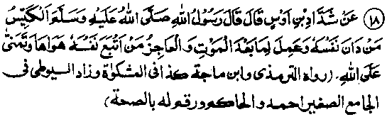
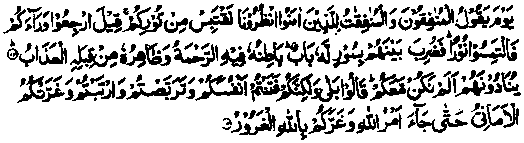
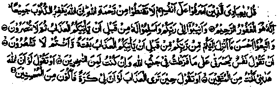

Chapter Six · Section (d): Ahadith on the foregoing subjects (concerning the excellence of Tawakkul)
Hadith 18

Rasulullah Sallallaho alaihe wasallam said: The wise man is he who has moulded himself to perform such deeds as are pleasing to Allah Ta'ala and performs deeds which are of value after death, and an incompetent and silly person is he who follows his baser desires and puts false hopes in Allah Ta'ala.
Note: The Hadith means that it is a folly to follow one’s sensual desires without bothering about what is lawful (Halaal) or unlawful (Haraam) and yet entertaining high hopes that Allah Ta'ala, Who is the Lord of Infinite Mercy, will forgive one’s sins, thus beguiling oneself with vain hopes. It occurs in another Hadith that, ' A wise man is he who earns virtues for the life after death and a naked (helpless) person is he who has no faith. O Allah! The true life is only the life of Akhirah." (Jami-us-Saghir). That is to say, the life of Akhirah is eternal and he who passes into the next world without any virtues to his credit, is like one who has wasted his lifetime. We should learn to distinguish between two different attitudes with regard to the Mercy and Forgiveness of Allah Ta'ala: (1) the attitude of a person holding true expectations of Allah’s Mercy and Forgiveness, who craves for His Mercy and begs it of Him and (2) the attitude of an impudent sinner who persists in sins and beguiles himself with vain hopes of forgiveness.
Imaam Razi Rahmatullah alaihe says, "The following two Ayaat of the Holy Qur’an should suffice to deprecate Gharoor’ (the beguilement: the attitude of those who are deceived by vain hopes of Allah’s Mercy and Forgiveness, despite their persistence in sins).
1. Let not the life of the world beguile you (lest you should indulge in worldly pursuits and neglect the other worldly gains), nor let the deceiver (Shaitan) beguile you with regard to Allah. (Luqman: 33);
2. You tempted yourself into error, and hesitated, and doubted, and vain desires beguiled you". (al-Hadid: 14)
Commenting on the first Ayat, Sa'eed bin Jubair Rahmatullah alaihe says, "Shaitan beguiles a person, with regard to Allah; through seducing him to persist in sins and giving him false hopes of forgiveness".
The second Ayat occurs in Surah al-Hadid: 14. The preceding Ayat describes a spectacle of the Day of Resurrection when the Mo’mineen (believers) will come to the Bridge (Siraat) laid over Jahannam, with a kind of Nur (light) shining forth before them (to help them on the way across the Bridge). And, in the following Ayat, Allah Ta'ala says:

On that Day when the hypocrites among men and women will say unto the believers: wait for. us that we may borrow from your light. It will be said: Go back and seek for light (Noor)!. Then there will separate them a wall wherein is a gate, the inner side whereof contain mercy, while the outer side thereof is toward the doom. They (the hypocrites) will cry unto them (saying): Wire we not with you? They (the believers) will say: Yes, verily; but you tempted yourselves (into error), awaited (evil turns of fortunes for the Muslims), and doubted (the truth of Islam), and vain desires beguiled you till the ordinance of Allah (about death) came to pass and the deceiver (Shaitan) deceived you concerning Allah. (al-Hadid: 13-14)
Abu Sufyan Radhiallaho anho is reported to have said by way of commentary on this Ayat:
'You tempted yourselves (into error)’ means,“You (the hypocrites) were led astray owing to your persistence in sins and you were beguiled by false hopes, for you used to say: ‘Allah will forgive us our sins. (Durr-e-Manthur)
The author of ‘Mazahir’ writes that Sheikh Ibne Abbad Shazli Rahmatullah alaihe has said in his explanatory discourse on ‘Hikam’ (a famous book on mysticism), "The Divines say that ‘Rajaa’ (hopefulness about Allah’s Mercy) does not consist in entertaining false hopes of Allah's Mercy which beguile a person into neglect of virtues, and lend him the audacity to commit sins: Such hopes are, in reality, vain desires, employed by Shaitan as a means of deceiving people". Ma'roof Karkhi Rahmatullah alaihe says: "It is sinful to crave for Jannah without performing good deeds; it is a kind of self-deception to entertain hopes of intercession by a pious being, without having any affinity, or spiritual link with him; and holding hopes of Allah’s Mercy without obeying His Commandments is mere folly and sheer ignorance".
Hasan Basri Rahmatullah alaihe says: "Some people neglect virtuous deeds and entertain vain hopes of Allah’s Mercy and Forgiveness, so much so that they leave the world without having performed any acts of virtue. You will hear one of them saying, ‘I have strong faith in the Mercy of Allah Ta'ala who is the Most Forgiving; I would say to him, ‘You are lying! For, if you had faith in Allah’s Mercy, you would have performed good deeds’. He also said on another occasion: "O servants of Allah! Beware of entertaining vain desires and false hopes of Allah’s Mercy. For, those who hold such hopes (without performing good deeds) are living in a fool’s paradise. By Allah, no person was ever granted good reward by Allah Ta'ala, neither in this world nor in the next, merely for having vain hopes of His Mercy". (Mazahir-e-Haq)
Imaam Ghazali Rahmatullah alaihe says: "The key to good fortune lies in mental alertness and thoughtful behaviour. All manners of misfortunes are rooted in conceit (Gharoor) and heedlessness. No bounty of Allah Ta'ala can excel the blessing of Faith (Imaan) and a true cognition of Allah Ta'ala. And, the only means to achieve them lies in having one’s heart illumined by spiritual insight. Similarly, no punishment of Allah Ta'ala is more tormenting than Kufr (infidelity) and disobedience. And the only thing that causes a man to stray into Kufr is the darkness of ignorance, which blinds his inward eye. And the hearts of those who are wise and enlightened are like niches, wherein there are bright lamps spreading light. The similitude of their hearts is given in the Holy Qur'an:
Like a niche wherein there is a lamp. (an-Noor: 35)
The hearts of those who have been beguiled into ‘Gharoor’ (vanity and vain hopes of Allah’s Mercy) are lost in abysmal darkness, where there are layers upon layers of darkness and they can hardly see anything. Their similitude is also given in the Holy Qur’an:
‘As darkness on a vast, abysmal sea. There covers him a wave, above which is a wave, above which is a cloud. Layer upon layer of darkness’. (an-Noor: 40).
Now that we know ‘Gharoor’ to be the root-cause of damnation, it is worthwhile explaining it in detail’so that we may guard ourselves against this spiritual bane. There are many Ayaat of the Holy Qur’an and numerous Ahadith on deprecation of ‘Gharoor’. Rasulullah Sallallaho alaihe wasallam said: "The wise man is he who observes self control and performs acts of virtue for the life after death; and the foolish person is he who follows his vain desires and entertains false hopes in Allah Ta'ala". In fact, what has been said in the Ahadith on deprecation of ignorance also applies to Gharoor’ (vanity); and the threats of punishment for the ignorant are also aimed at those imbued with ‘Gharoor’. For ‘Gharoor’ is born of ignorance it is rather part of ignorance; and though every kind of ignorance cannot be termed as ‘Gharoor’, every kind of Gharoor’ is ignorance. And the worst form of ‘Gharoor’ or ignorance is exemplified in the (attitude of the) Kaafirs (infidels), the profligates and the lewd ones who say, “The pleasures of this world are like cash currency (i.e. available at the moment) and those promised in Akhirah are like entries of credit made in a person’s account, to be realised later". And, they say, "No sensible person would prefer credit to cash currency". Now this is a foolish idea rooted in sheer ignorance.
The rule (of preferring cash over credit) applies only in such cases where the cash and credit are equal both in quality and quantity. But if someone were willing to buy a thing on credit for hundred rupees, for which another person offered only one rupee as ready money, even a fool would sell it on credit, not caring a whit for the principle of preferring cash to credit What is more, the immediate pleasures of this world can in no way compare with the eternal bliss of Akhirah. For, a man might, at the most, live for a hundred or a hundred and fifty years, which bears no comparison with the everlasting life of Akhirah.
To give another example, suppose a physician forbids a patient to eat a certain variety of fruit because it might prove fatal for him. Now,the patient cannot say to him, ‘The pleasant taste of this fruit is its immediate benefit while the benefits from avoiding it accrue later and one should not forego cash rewards for the promised ones’. Some fools say that the pain and suffering of this world are certain, while the punishments and rewards of Akhirah are uncertain and so one should not bear real hardships in the hope of winning what is uncertain. This notion is also a fallacy,born of utter ignorance. For, we see that businessmen take pains, and bear real hardships hoping tn gain profit, which is uncertain. Similarly, a patient takes bitter medicines and undergoes surgical operations thus suffering instant pain, in the hope of regaining health which is uncertain. Another false notion is entertained by the people who say, "The life of Akhirah is unseen; no one has experienced its joys and sufferings and we know little about the reality of that life? This reasoning is also rooted in ignorance. For, a layman should put his trust in the views of the learned ones who have the experience of working in a field of specialization.
A patient trusts what the experienced and learned doctors tell him about the treatment and cure of his disease and does not refuse to take a medicine simply because he does not know its effects. Nor does he ask the doctor to explain to him how the medicine works; if anyone did ask such a silly question, he would be looked upon as a fool. Likewise, we should have faith in what the Ambiya, saints, sages and divines have said about the Akhirah, because people the world over have, through the ages, testified to the truth and trustworthiness of these sacred beings. And, it makes little difference if a few ignorant fools deny having any knowledge of the next world or feel sceptical about it; such suspicions about the Akhirah usually arise in the minds of the Kaafirs (Infidels). The Muslims, by virtue of their verbal assertion of faith, do not voice their suspicions about Akhirah. But when they transgress the Commandments of Allah Ta’ala, commit sins, follow their lusts or indulge in worldly pleasures, their evil actions betray that, inwardly, they are also sceptical about the life after death. In fact, their actions belie what they claim to believe by word of mouth. Had they believed, from their hearts, in the reality of Akhirah, they would never have preferred this world to the eternal Akhirah. Such people are conceited (imbued with ‘Gharoor’) as they say, "Allah Ta'ala is the Lord of Infinite Bounty; He is All Forgiving and most Merciful. We have faith in His Mercy and Forgiveness and He will definitely forgive our sins. And it is a commendable virtue and a praiseworthy quality to entertain hopes of Mercy. His Mercy is infinitely vast! And our wrongs, however grievous they may be, seem insignificant against the measureless oceans of His Mercy and Forgiveness. Allah Ta'ala says, as reported in a Qudsi Hadith: I treat My servant according to his expectations of Me; so, he should have good expectations of Me’". Now this is an authentic Hadith and Allah Ta'ala does treat His men according to their expectations of Him. But it should also be borne in mind that, sometimes, Shaitan leads people astray through misinterpretation of an authentic text Had it not been so, he would have found it hard to deceive people. -Rasulullah Sallallaho alaihe wasallam has referred to this treachery of Shaitan in the Hadith quoted above, “The wise man is he who subdues his self (for obeying the commandments of Allah Ta'ala) and performs virtuous acts for the life after death; and the foolish person is he who follows his vain desires and still entertains hopes in Allah Ta'ala'These are the false hopes to which Shaitan gives a semblance of good expectations of Allah’s Mercy.
In the following Ayat of the Holy Qur’an, Allah Ta'ala has Himself explained what is meant by ’having good expectations of Allah’s mercy:
‘Lo! Those who believe, and those who emigrate (to escape the persecution) and strive in the way of Allah (which included all manner of efforts made for the cause of Deen). These have hopes of Allah’s Mercy’. (Al-Baqarah: 218)
One of the recurring themes of the Holy Qur’an is that Jannah and its bounties will be awarded to those who perform good deeds. Let us consider a simple example, which will serve to explain the true significance of the expectations of Allah’s Mercy’. Suppose a worker is employed to make utensils by a very generous employer who promises to pay him high wages and even more in excess. He is also'popularly known as very liberal-minded, for he does not take notice of minor faults and also pays for the spoilt or sub-standard pieces made by his workers. But the worker, instead of making utensils, breaks the tools supplied to him and sits waiting for his wages and rewards and says that he has perfect faith in the magnanimity of his master. Is there a man who will regard such a fool to be a sensible person? One reason why people hold such absurd views is that they cannot see the difference between true expectations and vain hopes. Hasan Basri Rahmatullah alaihe was asked, "What do you think of the people who do not perform good deeds but say that they have expectations of Allah’s Merry?" The Sheikh replied, "They are deluded by vain hopes. For, he who expects to gain a thing must struggle to achieve it, and he who fears a thing (e.g. punishment by Allah Ta'ala) must struggle hard to escape it’
One day Sheikh Muslim Ibne Yasaar Rahmatullah alaihe laid prostrate so long in Sajdah that his teeth began to bleed and two of them fell out because of the pressure. Someone said to him, "I am not capable of such devotions but I do have expectations of Allah’s forgiveness”. The Sheikh said, "You are far from entertaining hopes of forgiveness, very far indeed! For, he who expects to gain something must struggle to achieve it and he who fears a thing also tries to escape it" For instance, if a person expects to get a child but does not get married or, having married, does not have intercourse with his wife, everybody will call him a fool. Similarly, if a person entertains hopes of Allah’s forgiveness but does not have frith, or having Faith (Imaan), does not practice virtues, nor gives up evil deeds, he will also be regarded as a fool. On the other hand, a sensible person will get married, have intercourse with his wife and, still, will not feel certain of getting a child. Yet he will never cease to hope that Allah Ta'ala, in His infinite bounty, will grant him a child. He will adopt all measures for protecting the mother’s womb from diseases, etc., and observe all necessary cautions till the baby is born. Likewise, a sensible person is he who believes in Allah Ta'ala,. practises virtues, shuns evil deeds, hopes that Allah Ta'ala (in His infinite Mercy) will find his good deeds acceptable and remains in fear that his deeds might not be found acceptable till he meets his end. Only such people are really wise. All others, who have vain hopes of Allah’s Mercy without performing good deeds, are fools. And Allah Ta'ala says in the Holy Qur’an, about such foolish people:
Couldst thou but see when the guilty hang their heads before their Lord, (and say): Our Lord! We have now seen and heard, so send us back; we will do right, now we are sure. (as-Sajdah: 12)
That is, they will say, "Now we have realised that, as no one can get a child without getting married and having intercourse with his wife, nor can anyone get a harvest without ploughing the field and sowing seeds; so it is also not possible for anyone to win heavenly rewards without performing acts of virtue. However, hopes of Allah’s Mercy and Forgiveness are desirable for a person who is deeply sunk in sins but feels remorse and wants to repent, though Shaitan whispers into his ears,'How can you, who are so far gone and so deeply immersed in sins, repent of your misdeeds? And, even if you repent, how can your sins be forgiven? ‘Addressing such people, Allah Ta'ala says in the Holy Qur’an:

(O Muhammad)Say: O My slaves who have wronged yourselves (indulged in ‘Kufr’, Shirk’ and other sins)! Despair not of the Mercy of Allah, Who forgiveth all sins. Lo! He is the Forgiving, the Merciful. Turn unto Him repentant, and surrender unto Him, before there come unto you the doom, when you cannot be helped. And follow the better (guidance) of that which is revealed unto you from your Lord, before the doom cometh on you suddenly when you know not. (And you are being commanded to turn in repentance to Him) Lest any soul should say, (on the Day of Resurrection): Alas! My grief that I was unmindful (of what was due from me to Allah) and I was indeed among those who used to make fun of His Commandments. Or should say: if Allah had but guided me, I should have been among the righteous ones! Or should say when it seeth the Doom. Oh, that I had but a second chance (to live in the world) that I might be among the righteous! (az-Zumur: 53-58)
In these Ayaat, Allah Ta’ala has promised to forgive all the sins of His servants if they turn to Him in repentance. And in another Ayat, Allah Ta’ala says:
‘And lo! Verily I am Forgiving toward him who repenteth and believeth. and doeth good, and afterwards followeth the same path of righteousness. ’ (Taha: 82)
In this Ayat, forgiveness is promised only to those who repent, have faith, do good and follow the path of virtue. Hence, he who does so is sincere in his expectations of Allah’s mercy. But he who persists in sins, but claims to have hopes of Allah’s forgiveness, is a foolish person, beguiled by Shaitan into vain expectations.
In the early days of Islam, people exerted themselves in prayers, took pains to avoid sins, tried hard for a high standard of piety, abstained from doubtful things, worshipped Allah Ta'ala day and night and, still, wept bitterly for fear of Allah Ta'ala. Nowadays, everybody follows his lusts (indulges in sensual pleasures), hankers after worldly wealth, takes no thought of turning to Allah in repentance and, still, everybody feels happy and unafraid of Allah’s punishments; everybody says that he has good hopes of Allah’s mercy and a perfect faith in the forgiveness of Allah Ta'ala, Who will forgive all his sins. Do such people think that all the Ambiya Alaihimussalam, the Sahabah Radhiallaho anhum and the saints, who took great pains in their devotions, had no such hope of Allah’s Mercy? Allah forbid that we entertain such absurd notions!